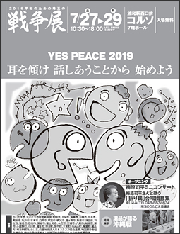
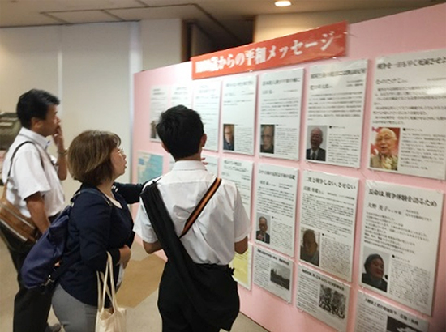
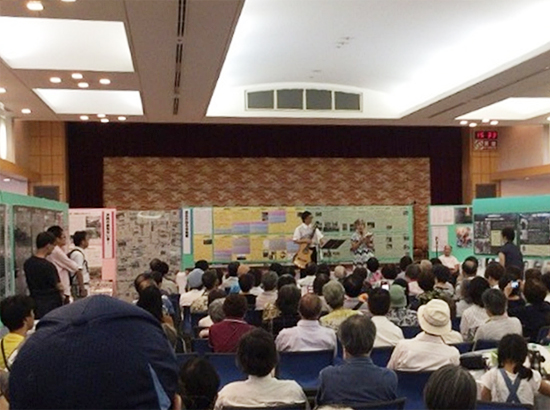

2019平和のための埼玉の戦争展開催報告
YES PEACE 2019 耳を傾け 話しあうことから 始めよう

1984年以来｢平和にいきる知恵と力｣を育む場として、今年で第36回目を迎えた｢2019平和のための埼玉の戦争展｣が、7月27日(土)～7月29日(月)の3日間、浦和コルソ7階ホールで開催され、2014年より3日間開催となってから最高の8,500人を超える来場者がありました。なお、開催にあたっては会員生協の皆さんが、分担金協力、会場設営スタッフ、受付スタッフとして運営を支えました。
7月27日(土)、翌日に台風が接近するとの情報があり、10時30分の開場前にはすでに多くの方々が入場を待つ状況となりました。12時からのオープニングイベントに続き、13時からは｢核兵器禁止条約実現を｣と題して、しらさぎ会の方が被爆の実相を語りました。
今年は｢遺品が語る沖縄戦｣の特別展示を実施、沖縄で収集された約100点の遺品とパネルの展示を行いました。会場は｢ノーモア核兵器のゾーン｣｢戦争の実相を知るゾーン｣｢いまを見つめるゾーン｣｢これからを考えるゾーン｣などにわかれて展示が行われ、訪れた高校生などがパネルを真剣に観ていました。
また、会場の中央には｢みんなで書こう平和のメッセージ｣と題したコーナーが設けられ、その場でメッセージを記入する方が多くいました。記入されたメッセージは会場内に貼り出されました。

